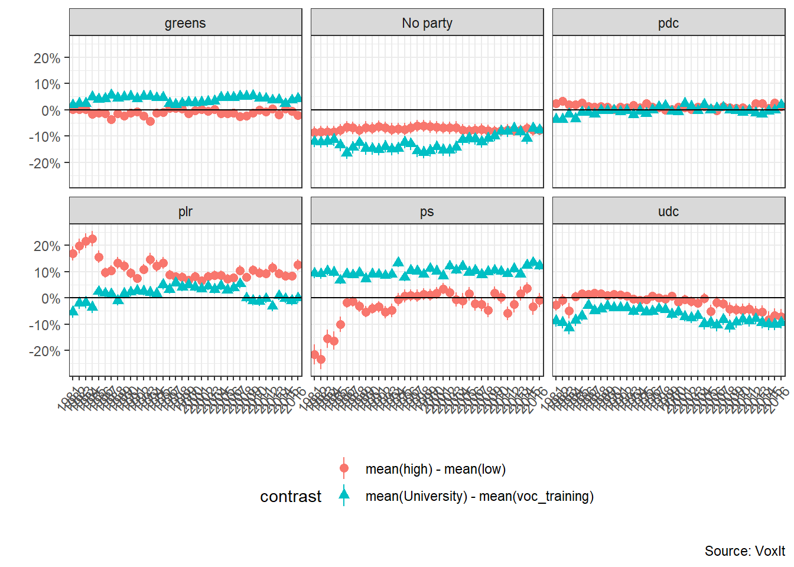
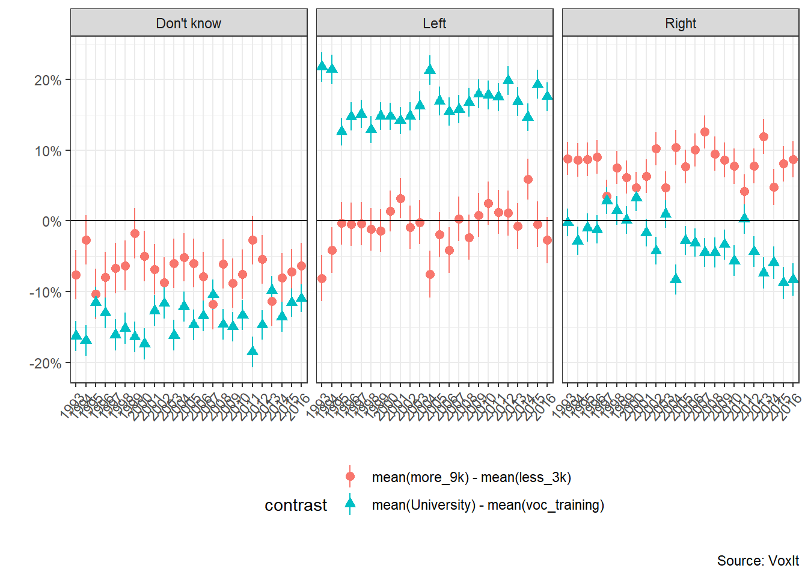
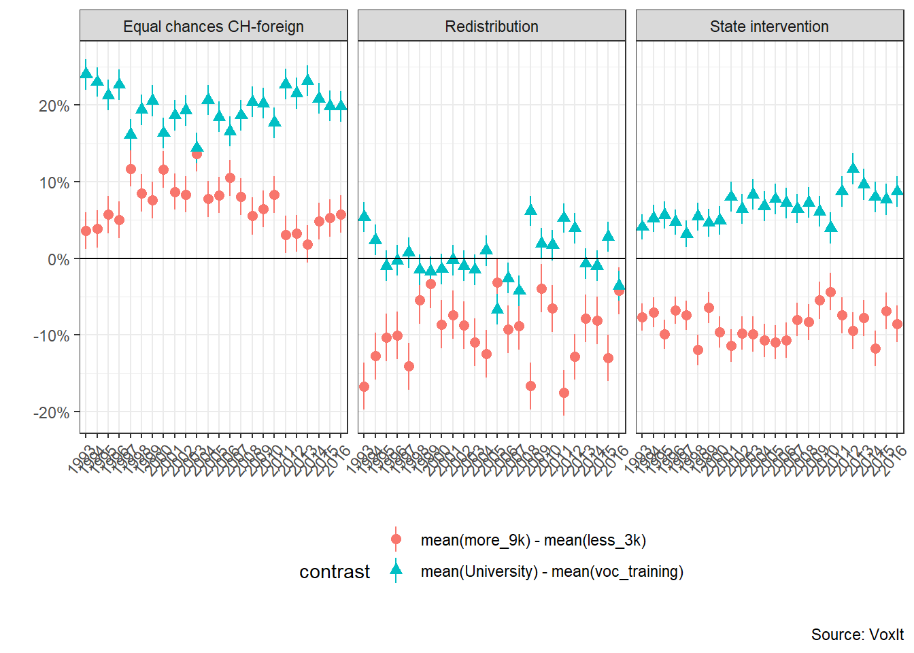

% Table created by stargazer v.5.2.3 by Marek Hlavac, Social Policy Institute. E-mail: marek.hlavac at gmail.com
% Date and time: jeu., déc. 07, 2023 - 10:30:13
\begin{table}[!htbp] \centering
\caption{}
\label{}
\begin{tabular}{@{\extracolsep{5pt}}lcccccc}
\\[-1.8ex]\hline
\hline \\[-1.8ex]
& \multicolumn{6}{c}{\textit{Dependent variable:}} \\
\cline{2-7}
\\[-1.8ex] & pss & green & pdc\_pcs & plr & udc & no\_party \\
\\[-1.8ex] & (1) & (2) & (3) & (4) & (5) & (6)\\
\hline \\[-1.8ex]
incomefhigh & $-$1.054$^{***}$ & $-$1.407$^{**}$ & 0.267 & 1.262$^{***}$ & $-$0.008 & $-$0.251$^{**}$ \\
& (0.181) & (0.568) & (0.179) & (0.165) & (0.209) & (0.104) \\
& & & & & & \\
incomefmiddle\_high & $-$0.309$^{***}$ & $-$0.555$^{*}$ & 0.068 & 0.969$^{***}$ & $-$0.033 & $-$0.289$^{***}$ \\
& (0.113) & (0.313) & (0.143) & (0.142) & (0.165) & (0.077) \\
& & & & & & \\
incomefmiddle\_low & $-$0.012 & $-$0.361 & 0.005 & 0.382$^{***}$ & 0.023 & $-$0.082 \\
& (0.102) & (0.278) & (0.133) & (0.139) & (0.153) & (0.070) \\
& & & & & & \\
educationfcomp\_school & $-$0.083 & $-$1.244$^{***}$ & 0.034 & 0.129 & 0.012 & 0.202$^{***}$ \\
& (0.103) & (0.367) & (0.124) & (0.130) & (0.135) & (0.068) \\
& & & & & & \\
educationfhigher\_voctraining & 0.507$^{***}$ & 0.249 & $-$0.344 & 0.301 & $-$0.672$^{***}$ & $-$0.412$^{***}$ \\
& (0.137) & (0.335) & (0.211) & (0.189) & (0.212) & (0.102) \\
& & & & & & \\
educationfmaturity & $-$0.345 & 1.296$^{***}$ & $-$0.420 & 0.442$^{*}$ & $-$1.473$^{***}$ & $-$0.629$^{***}$ \\
& (0.228) & (0.398) & (0.312) & (0.241) & (0.461) & (0.163) \\
& & & & & & \\
educationfUniversity & $-$0.156 & 1.302$^{***}$ & $-$0.306 & $-$0.014 & $-$1.505$^{**}$ & $-$0.651$^{***}$ \\
& (0.261) & (0.406) & (0.333) & (0.287) & (0.607) & (0.188) \\
& & & & & & \\
annee\_cat(1986,1991] & $-$0.919$^{***}$ & 0.327 & $-$0.619$^{***}$ & $-$0.698$^{***}$ & $-$0.670$^{***}$ & 0.287$^{***}$ \\
& (0.137) & (0.309) & (0.171) & (0.187) & (0.228) & (0.092) \\
& & & & & & \\
annee\_cat(1991,1996] & $-$0.601$^{***}$ & 0.211 & $-$0.737$^{***}$ & $-$0.417$^{***}$ & $-$0.064 & 0.119 \\
& (0.120) & (0.295) & (0.159) & (0.161) & (0.182) & (0.083) \\
& & & & & & \\
annee\_cat(1996,2001] & $-$0.940$^{***}$ & $-$1.191$^{***}$ & $-$0.970$^{***}$ & $-$0.668$^{***}$ & 0.171 & 0.248$^{***}$ \\
& (0.124) & (0.372) & (0.160) & (0.165) & (0.172) & (0.082) \\
& & & & & & \\
annee\_cat(2001,2006] & $-$0.667$^{***}$ & $-$0.295 & $-$1.039$^{***}$ & $-$0.575$^{***}$ & 0.965$^{***}$ & $-$0.118 \\
& (0.118) & (0.305) & (0.164) & (0.164) & (0.161) & (0.082) \\
& & & & & & \\
annee\_cat(2006,2011] & $-$0.751$^{***}$ & 0.148 & $-$0.597$^{***}$ & $-$0.316$^{*}$ & 0.947$^{***}$ & $-$0.237$^{**}$ \\
& (0.143) & (0.319) & (0.188) & (0.189) & (0.185) & (0.101) \\
& & & & & & \\
annee\_cat(2011,2016] & $-$0.645$^{***}$ & $-$0.169 & $-$1.132$^{***}$ & $-$0.281 & 1.267$^{***}$ & $-$0.355$^{***}$ \\
& (0.143) & (0.350) & (0.200) & (0.185) & (0.183) & (0.103) \\
& & & & & & \\
genderfemale & 0.124$^{***}$ & 0.382$^{***}$ & $-$0.149$^{***}$ & $-$0.242$^{***}$ & $-$0.550$^{***}$ & 0.259$^{***}$ \\
& (0.021) & (0.045) & (0.030) & (0.025) & (0.027) & (0.016) \\
& & & & & & \\
age\_cat[30,45) & 0.227$^{***}$ & 0.132$^{**}$ & 0.166$^{***}$ & 0.044 & 0.126$^{***}$ & $-$0.305$^{***}$ \\
& (0.035) & (0.067) & (0.054) & (0.044) & (0.048) & (0.025) \\
& & & & & & \\
age\_cat[45,65) & 0.278$^{***}$ & $-$0.110 & 0.321$^{***}$ & 0.123$^{***}$ & 0.201$^{***}$ & $-$0.452$^{***}$ \\
& (0.036) & (0.071) & (0.054) & (0.044) & (0.048) & (0.026) \\
& & & & & & \\
age\_cat[65,99] & 0.173$^{***}$ & $-$0.672$^{***}$ & 0.726$^{***}$ & 0.539$^{***}$ & 0.128$^{**}$ & $-$0.640$^{***}$ \\
& (0.039) & (0.090) & (0.056) & (0.046) & (0.051) & (0.028) \\
& & & & & & \\
religionAthée & 0.461$^{***}$ & 0.791$^{***}$ & $-$1.906$^{***}$ & $-$0.299$^{***}$ & 0.034 & 0.074$^{***}$ \\
& (0.033) & (0.062) & (0.077) & (0.047) & (0.048) & (0.027) \\
& & & & & & \\
religionAutre & 0.293$^{***}$ & 0.204 & $-$1.604$^{***}$ & $-$0.452$^{***}$ & 0.155$^{*}$ & 0.140$^{***}$ \\
& (0.060) & (0.130) & (0.124) & (0.092) & (0.083) & (0.046) \\
& & & & & & \\
religionCatholique chrétien & 0.035 & $-$0.034 & $-$0.329$^{***}$ & $-$0.060 & 0.213$^{**}$ & 0.189$^{***}$ \\
& (0.076) & (0.178) & (0.091) & (0.086) & (0.091) & (0.057) \\
& & & & & & \\
religionProtestant & 0.267$^{***}$ & 0.186$^{***}$ & $-$1.978$^{***}$ & 0.269$^{***}$ & 0.487$^{***}$ & 0.001 \\
& (0.024) & (0.053) & (0.039) & (0.027) & (0.029) & (0.017) \\
& & & & & & \\
regionLSuisse italienne & $-$0.110$^{**}$ & $-$0.710$^{***}$ & $-$0.205$^{***}$ & 0.598$^{***}$ & $-$0.779$^{***}$ & $-$0.007 \\
& (0.048) & (0.128) & (0.054) & (0.047) & (0.062) & (0.034) \\
& & & & & & \\
regionLSuisse romande & 0.177$^{***}$ & 0.057 & $-$0.325$^{***}$ & $-$0.146$^{***}$ & $-$1.225$^{***}$ & 0.314$^{***}$ \\
& (0.024) & (0.051) & (0.036) & (0.031) & (0.042) & (0.018) \\
& & & & & & \\
married & $-$0.015 & $-$0.217$^{***}$ & 0.154$^{***}$ & 0.035 & 0.205$^{***}$ & $-$0.082$^{***}$ \\
& (0.024) & (0.051) & (0.035) & (0.029) & (0.032) & (0.018) \\
& & & & & & \\
house\_ownership & $-$0.311$^{***}$ & $-$0.173$^{***}$ & 0.422$^{***}$ & 0.248$^{***}$ & 0.415$^{***}$ & $-$0.182$^{***}$ \\
& (0.023) & (0.050) & (0.031) & (0.026) & (0.028) & (0.017) \\
& & & & & & \\
incomefhigh:educationfcomp\_school & 0.054 & 0.754$^{*}$ & $-$0.173 & $-$0.324$^{*}$ & 0.113 & 0.209$^{*}$ \\
& (0.213) & (0.426) & (0.220) & (0.196) & (0.199) & (0.118) \\
& & & & & & \\
incomefmiddle\_high:educationfcomp\_school & 0.089 & 0.478$^{*}$ & 0.001 & $-$0.276$^{**}$ & 0.224$^{*}$ & $-$0.094 \\
& (0.106) & (0.271) & (0.123) & (0.130) & (0.120) & (0.068) \\
& & & & & & \\
incomefmiddle\_low:educationfcomp\_school & 0.092 & 0.274 & 0.009 & $-$0.190 & 0.083 & $-$0.069 \\
& (0.093) & (0.246) & (0.110) & (0.120) & (0.109) & (0.059) \\
& & & & & & \\
incomefhigh:educationfhigher\_voctraining & $-$0.245 & $-$0.059 & 0.161 & 0.298 & 0.080 & 0.107 \\
& (0.156) & (0.332) & (0.224) & (0.193) & (0.190) & (0.114) \\
& & & & & & \\
incomefmiddle\_high:educationfhigher\_voctraining & $-$0.096 & $-$0.254 & 0.029 & 0.063 & 0.067 & 0.260$^{***}$ \\
& (0.125) & (0.271) & (0.195) & (0.180) & (0.166) & (0.095) \\
& & & & & & \\
incomefmiddle\_low:educationfhigher\_voctraining & $-$0.148 & $-$0.029 & 0.124 & 0.140 & 0.203 & 0.132 \\
& (0.132) & (0.277) & (0.206) & (0.190) & (0.177) & (0.099) \\
& & & & & & \\
incomefhigh:educationfmaturity & 0.090 & $-$0.342 & 0.037 & $-$0.151 & $-$0.331 & 0.307$^{**}$ \\
& (0.155) & (0.294) & (0.247) & (0.193) & (0.240) & (0.120) \\
& & & & & & \\
incomefmiddle\_high:educationfmaturity & $-$0.066 & $-$0.242 & 0.119 & $-$0.248 & 0.173 & 0.222$^{**}$ \\
& (0.132) & (0.234) & (0.215) & (0.181) & (0.210) & (0.104) \\
& & & & & & \\
incomefmiddle\_low:educationfmaturity & $-$0.014 & $-$0.443$^{*}$ & 0.094 & $-$0.113 & 0.128 & 0.166 \\
& (0.137) & (0.245) & (0.225) & (0.191) & (0.224) & (0.108) \\
& & & & & & \\
incomefhigh:educationfUniversity & $-$0.047 & $-$0.164 & 0.341$^{*}$ & $-$0.072 & $-$0.246 & 0.219$^{**}$ \\
& (0.118) & (0.239) & (0.199) & (0.153) & (0.174) & (0.093) \\
& & & & & & \\
incomefmiddle\_high:educationfUniversity & $-$0.170 & 0.021 & 0.210 & $-$0.250$^{*}$ & 0.017 & 0.265$^{***}$ \\
& (0.104) & (0.199) & (0.185) & (0.146) & (0.163) & (0.084) \\
& & & & & & \\
incomefmiddle\_low:educationfUniversity & $-$0.009 & 0.074 & 0.053 & $-$0.175 & 0.031 & 0.091 \\
& (0.112) & (0.210) & (0.206) & (0.161) & (0.182) & (0.093) \\
& & & & & & \\
incomefhigh:annee\_cat(1986,1991] & 0.437$^{*}$ & 0.744 & $-$0.351 & 0.019 & 0.684$^{**}$ & $-$0.058 \\
& (0.249) & (0.645) & (0.250) & (0.228) & (0.305) & (0.143) \\
& & & & & & \\
incomefmiddle\_high:annee\_cat(1986,1991] & 0.228 & 0.483 & $-$0.037 & 0.161 & 0.407 & $-$0.105 \\
& (0.156) & (0.360) & (0.191) & (0.196) & (0.250) & (0.105) \\
& & & & & & \\
incomefmiddle\_low:annee\_cat(1986,1991] & 0.104 & 0.361 & $-$0.053 & 0.075 & $-$0.004 & 0.005 \\
& (0.139) & (0.323) & (0.175) & (0.191) & (0.237) & (0.095) \\
& & & & & & \\
incomefhigh:annee\_cat(1991,1996] & 0.901$^{***}$ & 0.898 & $-$0.234 & $-$0.128 & $-$0.158 & $-$0.204 \\
& (0.208) & (0.604) & (0.231) & (0.199) & (0.265) & (0.130) \\
& & & & & & \\
incomefmiddle\_high:annee\_cat(1991,1996] & 0.262$^{*}$ & 0.350 & 0.008 & $-$0.352$^{**}$ & $-$0.233 & 0.102 \\
& (0.136) & (0.343) & (0.176) & (0.171) & (0.205) & (0.094) \\
& & & & & & \\
incomefmiddle\_low:annee\_cat(1991,1996] & $-$0.165 & 0.264 & $-$0.046 & $-$0.034 & $-$0.154 & 0.111 \\
& (0.126) & (0.311) & (0.165) & (0.168) & (0.193) & (0.087) \\
& & & & & & \\
incomefhigh:annee\_cat(1996,2001] & 1.206$^{***}$ & 1.404$^{**}$ & $-$0.462$^{**}$ & $-$0.390$^{*}$ & $-$0.155 & $-$0.064 \\
& (0.205) & (0.651) & (0.228) & (0.202) & (0.245) & (0.124) \\
& & & & & & \\
incomefmiddle\_high:annee\_cat(1996,2001] & 0.492$^{***}$ & 0.803$^{**}$ & $-$0.093 & $-$0.636$^{***}$ & $-$0.171 & 0.173$^{*}$ \\
& (0.137) & (0.409) & (0.174) & (0.175) & (0.191) & (0.092) \\
& & & & & & \\
incomefmiddle\_low:annee\_cat(1996,2001] & 0.038 & 0.817$^{**}$ & $-$0.195 & $-$0.268 & $-$0.076 & 0.101 \\
& (0.130) & (0.390) & (0.168) & (0.174) & (0.181) & (0.086) \\
& & & & & & \\
incomefhigh:annee\_cat(2001,2006] & 1.099$^{***}$ & 1.429$^{**}$ & $-$0.434$^{*}$ & $-$0.498$^{**}$ & $-$0.332 & 0.031 \\
& (0.197) & (0.589) & (0.224) & (0.196) & (0.228) & (0.121) \\
& & & & & & \\
incomefmiddle\_high:annee\_cat(2001,2006] & 0.534$^{***}$ & 0.565 & $-$0.126 & $-$0.581$^{***}$ & $-$0.419$^{**}$ & 0.191$^{**}$ \\
& (0.131) & (0.347) & (0.179) & (0.173) & (0.179) & (0.092) \\
& & & & & & \\
incomefmiddle\_low:annee\_cat(2001,2006] & 0.114 & 0.430 & $-$0.042 & $-$0.294$^{*}$ & $-$0.317$^{*}$ & 0.074 \\
& (0.124) & (0.322) & (0.172) & (0.173) & (0.169) & (0.086) \\
& & & & & & \\
incomefhigh:annee\_cat(2006,2011] & 0.936$^{***}$ & 1.355$^{**}$ & $-$0.485$^{**}$ & $-$0.337 & $-$0.368 & $-$0.228$^{*}$ \\
& (0.214) & (0.592) & (0.241) & (0.218) & (0.248) & (0.136) \\
& & & & & & \\
incomefmiddle\_high:annee\_cat(2006,2011] & 0.426$^{***}$ & 0.485 & $-$0.266 & $-$0.312 & $-$0.110 & $-$0.172 \\
& (0.154) & (0.356) & (0.201) & (0.197) & (0.202) & (0.110) \\
& & & & & & \\
incomefmiddle\_low:annee\_cat(2006,2011] & 0.172 & 0.246 & $-$0.330 & $-$0.181 & $-$0.107 & $-$0.022 \\
& (0.154) & (0.340) & (0.204) & (0.204) & (0.199) & (0.109) \\
& & & & & & \\
incomefhigh:annee\_cat(2011,2016] & 1.100$^{***}$ & 1.305$^{**}$ & $-$0.105 & $-$0.325 & $-$0.640$^{***}$ & $-$0.264$^{*}$ \\
& (0.212) & (0.609) & (0.248) & (0.213) & (0.245) & (0.136) \\
& & & & & & \\
incomefmiddle\_high:annee\_cat(2011,2016] & 0.715$^{***}$ & 0.397 & 0.400$^{*}$ & $-$0.225 & $-$0.284 & $-$0.462$^{***}$ \\
& (0.153) & (0.381) & (0.211) & (0.191) & (0.199) & (0.111) \\
& & & & & & \\
incomefmiddle\_low:annee\_cat(2011,2016] & 0.200 & 0.193 & 0.379$^{*}$ & $-$0.078 & $-$0.264 & $-$0.197$^{*}$ \\
& (0.152) & (0.370) & (0.210) & (0.196) & (0.194) & (0.110) \\
& & & & & & \\
educationfcomp\_school:annee\_cat(1986,1991] & 0.145 & 0.657$^{*}$ & 0.120 & 0.025 & $-$0.155 & $-$0.137$^{*}$ \\
& (0.115) & (0.365) & (0.131) & (0.134) & (0.168) & (0.076) \\
& & & & & & \\
educationfhigher\_voctraining:annee\_cat(1986,1991] & 0.011 & 0.362 & 0.339 & 0.075 & $-$0.366 & $-$0.275$^{*}$ \\
& (0.211) & (0.393) & (0.284) & (0.213) & (0.448) & (0.152) \\
& & & & & & \\
educationfmaturity:annee\_cat(1986,1991] & 0.772$^{***}$ & $-$0.704$^{*}$ & 0.633$^{**}$ & $-$0.091 & 0.920$^{**}$ & $-$0.018 \\
& (0.222) & (0.391) & (0.273) & (0.205) & (0.450) & (0.152) \\
& & & & & & \\
educationfUniversity:annee\_cat(1986,1991] & 0.869$^{***}$ & $-$0.757$^{*}$ & $-$0.072 & 0.459 & 0.343 & $-$0.118 \\
& (0.272) & (0.418) & (0.343) & (0.286) & (0.653) & (0.194) \\
& & & & & & \\
educationfcomp\_school:annee\_cat(1991,1996] & $-$0.114 & 0.849$^{**}$ & 0.146 & $-$0.127 & $-$0.277$^{*}$ & 0.002 \\
& (0.114) & (0.368) & (0.133) & (0.134) & (0.159) & (0.074) \\
& & & & & & \\
educationfhigher\_voctraining:annee\_cat(1991,1996] & $-$0.175 & 0.299 & 0.056 & $-$0.209 & 0.769$^{***}$ & $-$0.097 \\
& (0.139) & (0.330) & (0.199) & (0.148) & (0.202) & (0.099) \\
& & & & & & \\
educationfmaturity:annee\_cat(1991,1996] & 0.919$^{***}$ & $-$0.296 & 0.371 & $-$0.077 & 0.799$^{*}$ & $-$0.039 \\
& (0.216) & (0.386) & (0.277) & (0.203) & (0.449) & (0.152) \\
& & & & & & \\
educationfUniversity:annee\_cat(1991,1996] & 0.817$^{***}$ & $-$0.594 & 0.017 & 0.647$^{**}$ & 0.623 & 0.002 \\
& (0.260) & (0.406) & (0.318) & (0.271) & (0.612) & (0.185) \\
& & & & & & \\
educationfcomp\_school:annee\_cat(1996,2001] & $-$0.390$^{***}$ & 0.217 & 0.036 & $-$0.218 & $-$0.189 & 0.136$^{*}$ \\
& (0.124) & (0.494) & (0.141) & (0.151) & (0.146) & (0.075) \\
& & & & & & \\
educationfhigher\_voctraining:annee\_cat(1996,2001] & $-$0.021 & 0.474 & 0.453$^{***}$ & $-$0.180 & 0.400$^{**}$ & $-$0.179$^{**}$ \\
& (0.125) & (0.359) & (0.175) & (0.145) & (0.189) & (0.089) \\
& & & & & & \\
educationfmaturity:annee\_cat(1996,2001] & 0.985$^{***}$ & $-$0.242 & 0.191 & $-$0.230 & 0.787$^{*}$ & 0.083 \\
& (0.220) & (0.433) & (0.297) & (0.226) & (0.454) & (0.155) \\
& & & & & & \\
educationfUniversity:annee\_cat(1996,2001] & 0.782$^{***}$ & $-$0.302 & 0.216 & 0.783$^{***}$ & 0.957 & $-$0.148 \\
& (0.257) & (0.420) & (0.310) & (0.269) & (0.599) & (0.182) \\
& & & & & & \\
educationfcomp\_school:annee\_cat(2001,2006] & $-$0.322$^{***}$ & 0.727$^{*}$ & $-$0.093 & $-$0.391$^{**}$ & $-$0.031 & 0.179$^{**}$ \\
& (0.116) & (0.393) & (0.147) & (0.156) & (0.134) & (0.075) \\
& & & & & & \\
educationfhigher\_voctraining:annee\_cat(2001,2006] & $-$0.037 & 0.319 & 0.280 & $-$0.109 & 0.341$^{*}$ & $-$0.100 \\
& (0.119) & (0.325) & (0.177) & (0.137) & (0.178) & (0.089) \\
& & & & & & \\
educationfmaturity:annee\_cat(2001,2006] & 1.012$^{***}$ & $-$0.246 & 0.276 & 0.196 & 0.601 & $-$0.023 \\
& (0.215) & (0.395) & (0.291) & (0.207) & (0.441) & (0.153) \\
& & & & & & \\
educationfUniversity:annee\_cat(2001,2006] & 0.884$^{***}$ & $-$0.189 & 0.184 & 0.691$^{***}$ & 0.788 & $-$0.110 \\
& (0.254) & (0.397) & (0.306) & (0.266) & (0.595) & (0.181) \\
& & & & & & \\
educationfcomp\_school:annee\_cat(2006,2011] & $-$0.262 & 1.285$^{***}$ & $-$0.053 & $-$0.260 & $-$0.090 & 0.071 \\
& (0.168) & (0.416) & (0.189) & (0.190) & (0.172) & (0.106) \\
& & & & & & \\
educationfhigher\_voctraining:annee\_cat(2006,2011] & $-$0.117 & 0.433 & 0.143 & $-$0.650$^{***}$ & 0.337$^{*}$ & 0.056 \\
& (0.135) & (0.328) & (0.190) & (0.150) & (0.185) & (0.101) \\
& & & & & & \\
educationfmaturity:annee\_cat(2006,2011] & 0.821$^{***}$ & $-$0.155 & 0.252 & $-$0.148 & 0.959$^{**}$ & 0.080 \\
& (0.227) & (0.401) & (0.295) & (0.214) & (0.442) & (0.163) \\
& & & & & & \\
educationfUniversity:annee\_cat(2006,2011] & 0.894$^{***}$ & $-$0.241 & 0.088 & 0.221 & 0.707 & $-$0.040 \\
& (0.258) & (0.402) & (0.308) & (0.268) & (0.597) & (0.184) \\
& & & & & & \\
educationfcomp\_school:annee\_cat(2011,2016] & $-$0.314$^{*}$ & 1.135$^{**}$ & 0.401$^{**}$ & $-$0.243 & $-$0.066 & 0.284$^{***}$ \\
& (0.164) & (0.476) & (0.179) & (0.184) & (0.172) & (0.109) \\
& & & & & & \\
educationfhigher\_voctraining:annee\_cat(2011,2016] & $-$0.316$^{**}$ & 0.403 & 0.231 & $-$0.556$^{***}$ & 0.440$^{**}$ & 0.080 \\
& (0.130) & (0.351) & (0.177) & (0.138) & (0.180) & (0.101) \\
& & & & & & \\
educationfmaturity:annee\_cat(2011,2016] & 0.660$^{***}$ & $-$0.346 & 0.396 & $-$0.047 & 1.247$^{***}$ & 0.251 \\
& (0.219) & (0.414) & (0.280) & (0.202) & (0.434) & (0.157) \\
& & & & & & \\
educationfUniversity:annee\_cat(2011,2016] & 0.889$^{***}$ & $-$0.212 & 0.079 & 0.074 & 0.818 & 0.076 \\
& (0.256) & (0.410) & (0.305) & (0.266) & (0.595) & (0.184) \\
& & & & & & \\
Constant & $-$1.509$^{***}$ & $-$3.693$^{***}$ & $-$1.364$^{***}$ & $-$2.489$^{***}$ & $-$2.501$^{***}$ & 0.222$^{***}$ \\
& (0.101) & (0.265) & (0.132) & (0.137) & (0.151) & (0.069) \\
& & & & & & \\
\hline \\[-1.8ex]
Observations & 68,501 & 68,501 & 68,501 & 68,501 & 68,501 & 75,456 \\
Log Likelihood & $-$30,158.940 & $-$8,983.191 & $-$17,384.620 & $-$23,338.040 & $-$20,844.110 & $-$48,390.560 \\
Akaike Inf. Crit. & 60,477.870 & 18,126.380 & 34,929.240 & 46,836.070 & 41,848.220 & 96,941.110 \\
\hline
\hline \\[-1.8ex]
\textit{Note:} & \multicolumn{6}{r}{$^{*}$p$<$0.1; $^{**}$p$<$0.05; $^{***}$p$<$0.01} \\
\end{tabular}
\end{table} The aim of this study was to explore the social foundations of the transformation of Swiss capitalism since the 1980s. The rationale was to show that the neoliberal transformation of the Swiss hybrid model had to be founded on a strategy of institutional change supported by a sufficiently broad social base.
The crisis of the 90s did not mark a break-up of the Swiss dominant social bloc, but a recomposition and a change in the power balance within the bloc itself. While the crisis did not destabilized the left bloc that much, the right bloc, that I named “liberal-conservative” throughout this work, underwent important process of change.
The social bases of the political parties representing the liberal-conservative bloc, the PRD-PLR, PDC and UDC, changed substantially since the 80s. Unlike Durrer de la Sota, Gethin, and Martinez-Toledano (2021), who showed that the social base of right-wing government parties stayed rather stable since the 70s, the results presented in the previous section show that, while the UDC’s social basis was rather merchant in the 80s, it transformed into a popular base during the 90s. Furthermore, the social basis of the PRD (then PLR) used to be very bourgeois until the 2010s, period after which this social base showed trends towards an evolution into a merchant right. Interestingly, my results are more supportive of the brahmin left vs merchant right divide hypothesis than the WPID’s own results for the Swiss case. However, if one looks at political leaning instead of party support, the left appears to be bourgeois in the sense that it is supported by the upper-middle income groups and by university graduates, while right self-identification evolved into a merchant right pattern.
Then, an analysis closer to the methods and conceptual framework of the neorealist approach was carried out through a latent class analysis for the late 1990s in order to assess more closely the recomposition of the left and liberal-conservative blocs during the crisis. The LCA results show…
As stated in the introduction, the present work is a first attempt to employ neorealist framework and methodology to study institutional change in Switzerland. The present work suffers from several limitations that could be improve in further studies. First, the time span ranges from 1981 to 2016. Although the time frame can’t really go back further than 1981, it could be extended to most recent years. This could be done, for instance, by analyzing the VOTO studies (the successor of the VOX studies since 2017) which collected post-voting survey data from 2017 to 2020. This analysis of the VOTO studies could be complemented, as done in this work, by a latent class analysis using more recent data, for instance the SELECTS 2019 panel study, which offers even better questions than the SELECTS post-election data for 1999 used in the previous section. Overall, more recent data analysis would be a good complement to the present study.
Finally, the present work tends to overlook the crucial role of ideology and political strategies. On the one hand, the different political strategies aimed at promoting a new Swiss socio-economic model, both on the left and the right, deserve to be more carefully explored. On the other hand, ideology, both at the Swiss and international levels, could explain the transformations of these strategies, but also the transformation of the social basis of the different blocs.
4 Appendix


